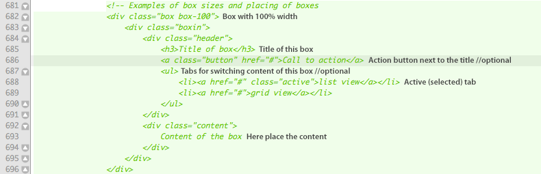
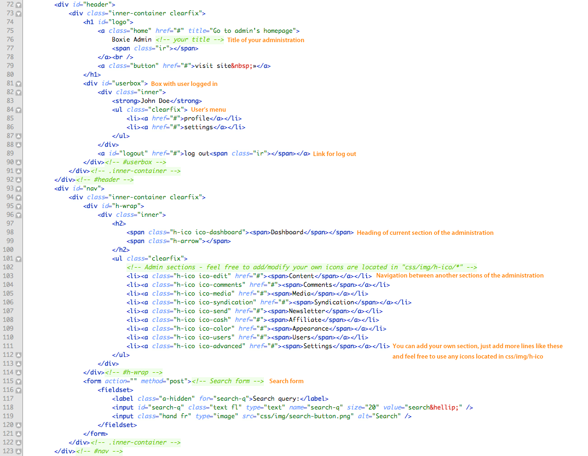
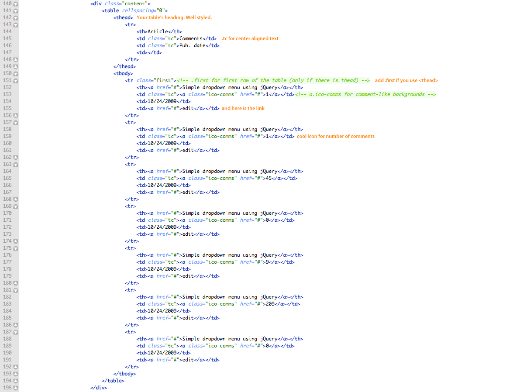
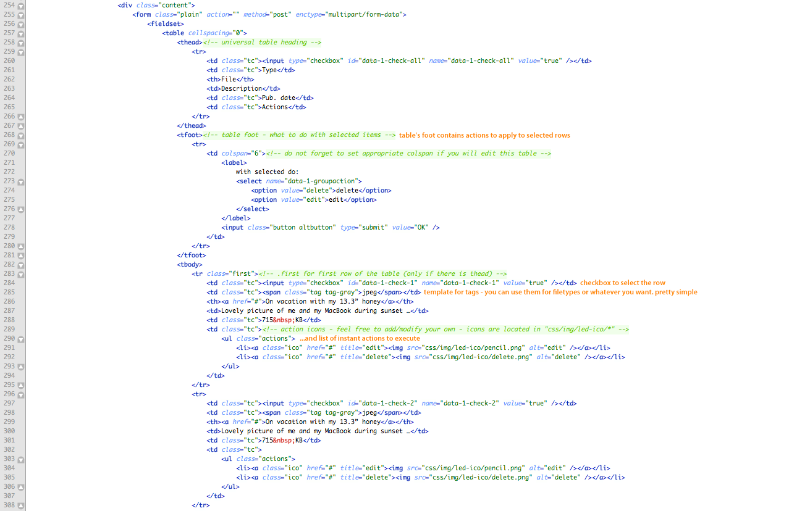
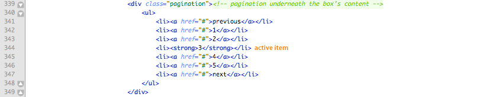
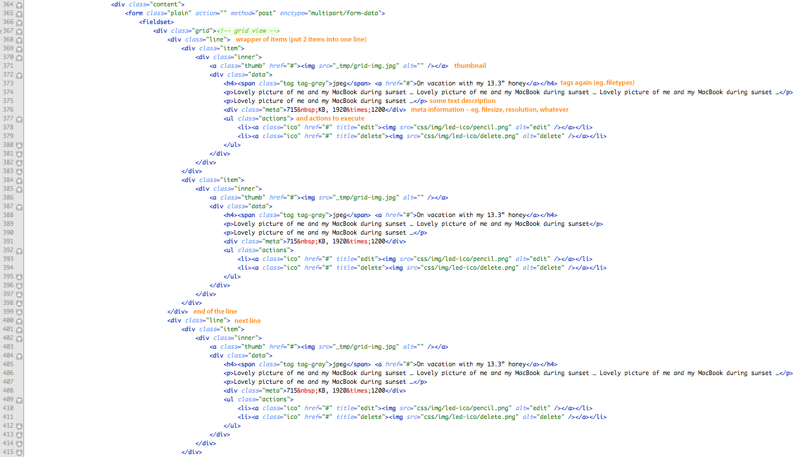
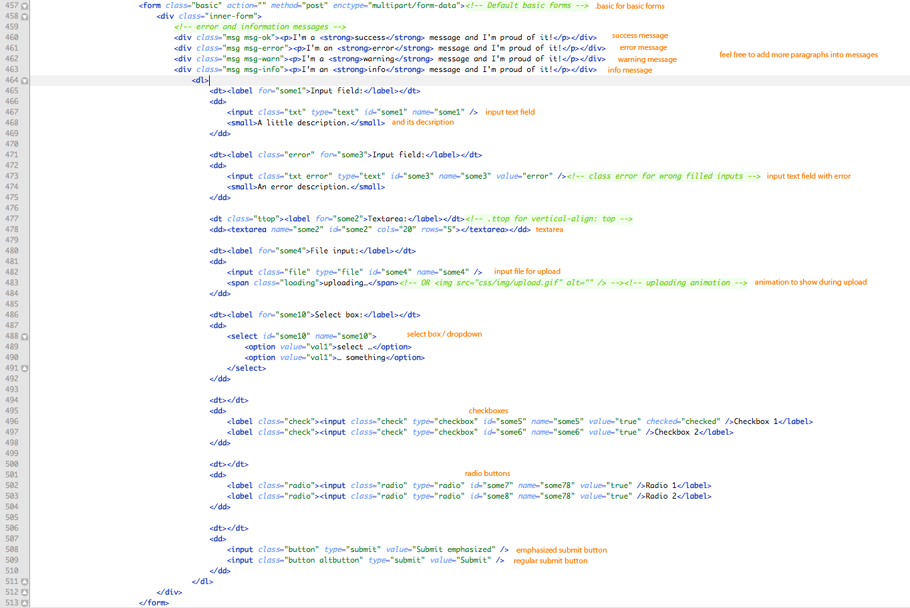
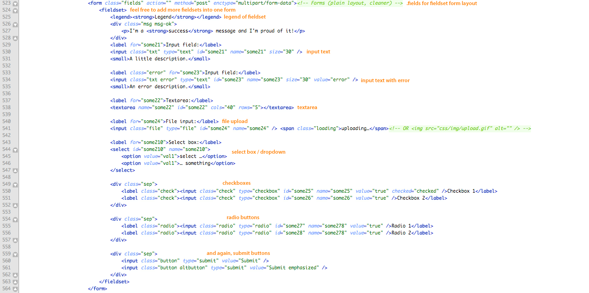
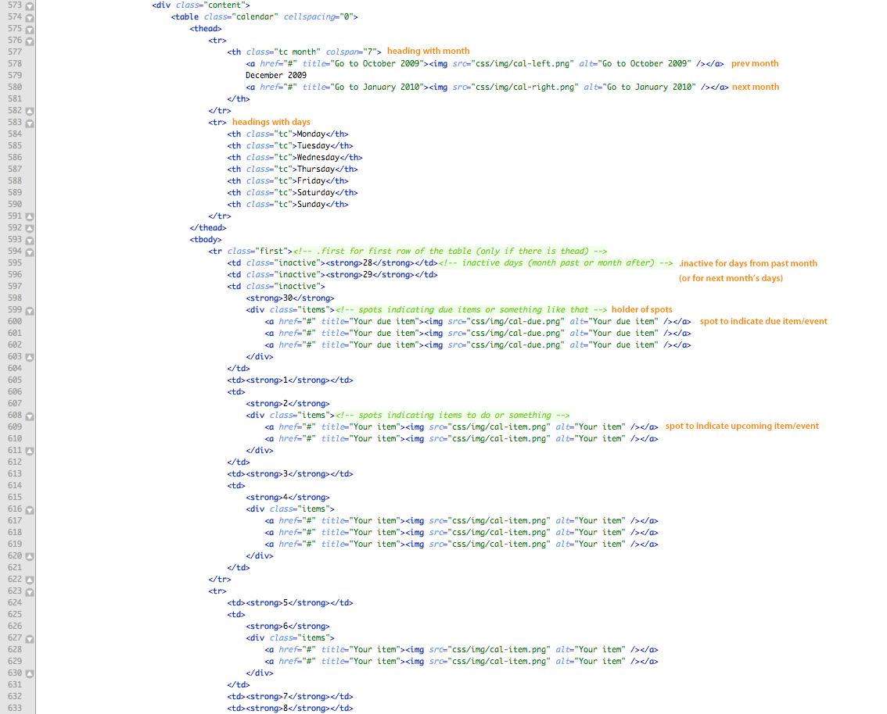

Created: 3/12/2009
By: gwaihir
Thank you for purchasing my theme. If you have any questions that are beyond the scope of this help file, please feel free to email via my user page contact form here. Thanks so much!
You can select your color of the boxie admin here. Just change name of the stylesheet to (blue/red/black/green/brown/orange/purple). Or use one of prepared HTML files (red.html, black.html etc.)
<link rel="stylesheet" type="text/css" href="css/blue.css" media="screen, projection, tv" /><!-- Change name of the stylesheet to change colors (blue/red/black/green/brown/orange/purple) -->
This theme is a fixed layout with one, two, three or four columns. It's up to you. In addition, you can combine columns (for example – two column and underneath them four columns). Columns are created by boxes:
You can use class box-25 / 50 / 75 / 100 (%). So you can do for example three columns: box-25/box-25/box-50. You can also add the class="altbox" to emphasize the box (box will be blue).
Lets go back and explain the header:
The most important part of the header is navigation. Feel free to add more sections with any icon from css/img/h-ico/*
You can put several types of content into the boxes. First is the table of articles/pages/whatever:
Next is the tabular data - for example table with uploaded files:
You can also use the pagination for data within boxes. Add it just bellow the content of the box:
Grid view is perfect for shopping items, files or whatever you want:
Once again, you can add a pagination underneath the grid view.
Lets continue to forms. First the basic layout of forms:
And the fieldset layout of forms:
Finally, look at the calendar:
I think boxie admin's HTML code is pretty simple to use, just follow the conventions and get the best results.
Login screen is in the login.html. There is no need to edit something. But if you want to modify the login screen, feel free. It's built just like the boxes in the index.html.
I'm using two CSS file in this theme. The first one is a main CSS file. The second file contains all of the specific stylings for Internet Explorer 6 & 7.
Look at some important parts of the main CSS file:
If you want to add more items to the navigation, just duplicate this line and modify the class name and URL of background (use any icon from css/img/h-ico/*):
#nav #h-wrap .ico-send {background-image: url("img/h-ico/send.png");}
You can use .button (and alternative .altbutton) for buttons/links/submit inputs in the page:
.button {border: 1px solid #00487a; -moz-border-radius: 5px; -webkit-border-radius: 5px; border-radius: 5px; background: #0567ad url("img/button.gif") repeat-x; padding: 5px 9px 5px; text-shadow: #00487a 1px 1px 0; color: #fff; cursor: pointer;}
Here are the styles for icons. .ico is for icons without text and .ico-a for icons with text
/* icons for content links etc. */
.ico { border: 0 !important; }
.ico-a { border: 0 !important; padding-left: 20px !important; }
You can also use the .tag class for tags, filetypes, badges etc. Feel free to add your own tag class just like the .tag-gray (eg. with different color/background...)
/* tags, filetypes */
.tag {
padding: 4px 7px; color: #fff !important;
border-radius: 3px;
-moz-border-radius: 3px;
-webkit-border-radius: 3px;
}
.tag-gray { /* feel free to add more tag types, just change the colors of gradients/borders */
border-bottom: 1px solid #666;
background: #999;
background: gradient(linear, left top, left bottom, from(#bbb), to(#999));
background: -webkit-gradient(linear, left top, left bottom, from(#bbb), to(#999));
}
These styles are used for messages in forms (error, success, etc.). You can change color/backgrounds if you want. Feel free.
.msg p {margin: 0 0 8px 0; padding-left: 25px;}
.msg-ok {border-color: #a6d877; background: #d2ecba url("img/msg-ok.png") repeat-x; color: #336801;}
.msg-error {border-color: #f3abab; background: #f9c9c9 url("img/msg-error.png") repeat-x; color: #8d0d0d;}
.msg-warn {border-color: #d7e059; background: #f3f7aa url("img/msg-warn.png") repeat-x; color: #6c6600;}
.msg-info {border-color: #9fd1f5; background: #c3e6ff url("img/msg-info.png") repeat-x; color: #005898;}
These styles are used for messages in forms (error, success, etc.). You can change color/backgrounds if you want. Feel free.
.msg p {margin: 0 0 8px 0; padding-left: 25px;}
.msg-ok {border-color: #a6d877; background: #d2ecba url("img/msg-ok.png") repeat-x; color: #336801;}
.msg-error {border-color: #f3abab; background: #f9c9c9 url("img/msg-error.png") repeat-x; color: #8d0d0d;}
.msg-warn {border-color: #d7e059; background: #f3f7aa url("img/msg-warn.png") repeat-x; color: #6c6600;}
.msg-info {border-color: #9fd1f5; background: #c3e6ff url("img/msg-info.png") repeat-x; color: #005898;}
I used jQuery for dynamic adding of some classes and for handling with the navigation. You won't need to edit that javascipt. And if you'll want to add your own JS, just go ahead (it's located in the <head> of the index.html).
I've included one PSD with the whole boxie admin's design. It's well structured.
I've used the following images, icons or other files as listed.
Once again, thank you so much for purchasing this theme. As I said at the beginning, I'd be glad to help you if you have any questions relating to this theme. No guarantees, but I'll do my best to assist. If you have a more general question relating to the themes on ThemeForest, you might consider visiting the forums and asking your question in the "Item Discussion" section.
gwaihir